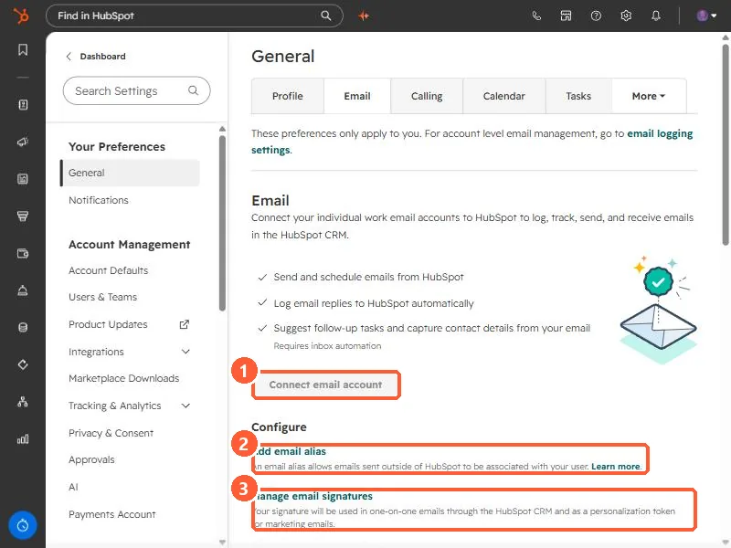
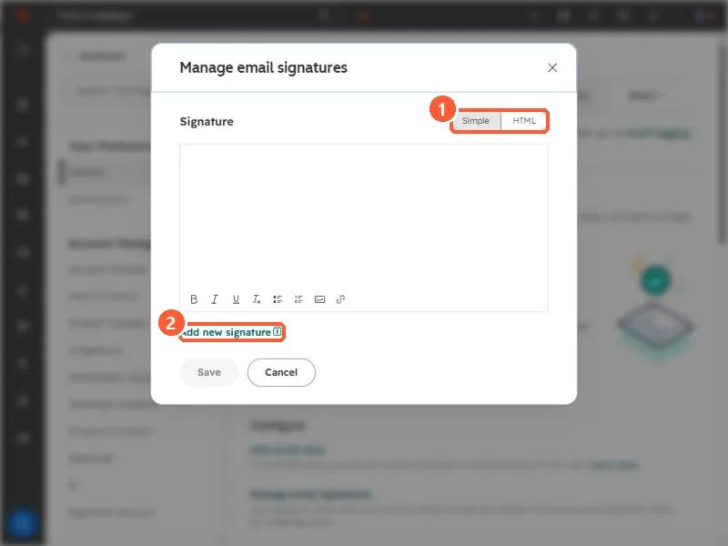
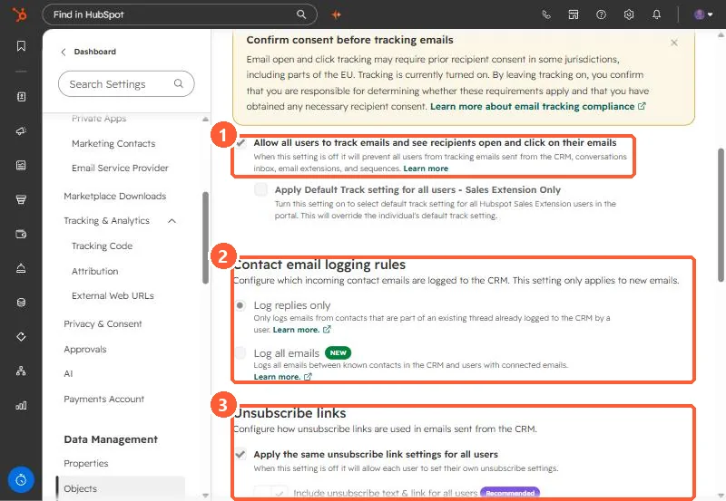
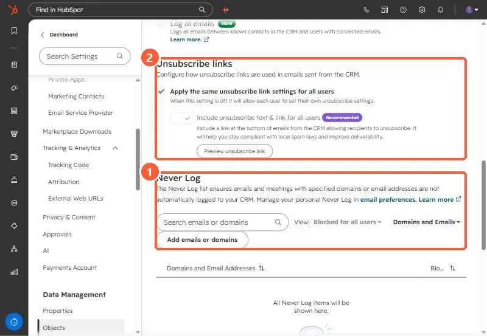
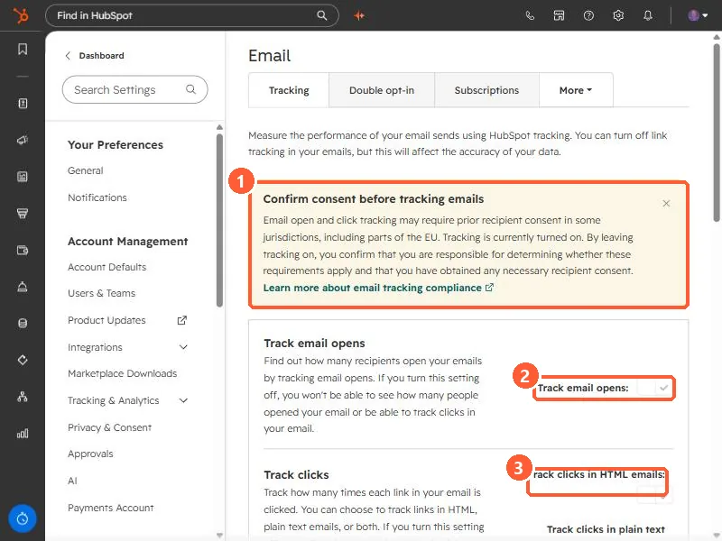
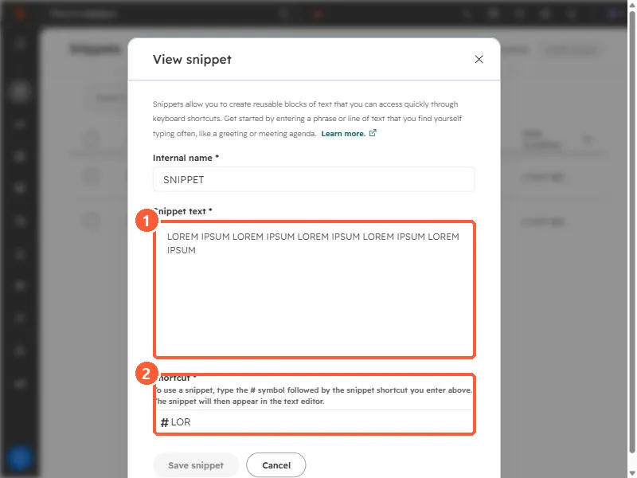

Short answer
Connect your work inbox under Settings, General, Email (Gmail, Outlook, Exchange or IMAP; View-Only seats cannot). What gets logged is decided account-wide in Settings, Objects, Activities: Log all emails logs every email between users and existing contacts, Log replies only logs a contact's email only when it continues a thread someone already logged. Keep internal and private correspondents out with the Never Log list, limit who can read logged emails with CRM email permissions, and know your send limits: 1,000 a day for most business inboxes and 350 for free Gmail.
1. Connect the inbox, aliases and signature
These preferences apply only to you. Open Settings, General, Email: Connect email account (1), Add email alias (2) and Manage email signatures (3).


- Connecting lets you send, schedule and log one-to-one emails from HubSpot, send sequence emails, and use the sales tools in your inbox. Tick Turn on inbox automation while connecting for follow-up task suggestions. You can connect more than one work inbox.
- Aliases let emails sent from other addresses be associated with your user. Gmail aliases set up in Gmail can be used. With Exchange or IMAP you cannot send from an alias inside HubSpot, but you can log alias emails with the BCC address or the add-in. Outlook alias sending is a beta that needs you to disconnect and reconnect.
- Signatures can be written in the simple editor or pasted as HTML (1). Your signature is used in one-to-one emails and is also available as a personalization token, so a marketing email can be signed by the contact owner.


For Outlook specifics and connection errors, see HubSpot with Outlook and Office 365.
2. Log all emails or log replies only
The rule is account-wide, under Settings, Objects, Activities, Contact email logging rules (2). Tracking (1) and unsubscribe link settings (3) are on the same page.


| Rule | What logs |
|---|---|
| Log all emails (HubSpot's default) | Emails to and from existing contacts for every user with a connected inbox, including emails sent outside HubSpot. Emails to people who are not contacts do not log. |
| Log replies only | A contact's email logs only if it continues a thread a user already logged from the CRM or the sales extension with Log ticked. A brand-new email from a contact does not log. |
A reply under Log replies only also needs the original not sent to a Never Log address, the inbox still connected, the user still active, and the same subject line. Changing the rule only affects new emails. My demo portal is set to Log replies only even though HubSpot calls Log all emails the default, so check yours rather than assuming.
3. The Never Log list
Addresses and domains on the Never Log list are excluded from email logging and contact creation, and their tracking activity does not appear on timelines. It covers meetings too. The account-wide list is at the bottom of Activities settings (1) and needs Super Admin. Each user also has a personal list in their own email preferences.


- Enter domains as
@domain.com. - Account-wide entries are tagged All Users, personal ones Only You. The View filter switches between them.
- Add your own company domain so internal threads stay off contact timelines, plus vendors and personal correspondents.
4. Who can read logged emails
Logged emails can contain things not everyone should see. Under Users & Teams (1), edit each user's or permission set's CRM email permissions to control who can view, edit or delete logged emails. The scope can be all CRM emails, or only the user's own (sent, received or copied on) plus their team's.

The team scope only works if team membership is accurate. See permission sets and seats.
5. Tracking and consent
Open and click tracking may need the recipient's prior consent in some places, including parts of the EU. For marketing email, HubSpot's Tracking tab says that by leaving tracking on you confirm you are responsible for deciding whether consent rules apply and for having it. You can turn off Track email opens (2) and Track clicks (3) account-wide, or for one email in the editor.


One-to-one email tracking is a separate setting: the checkbox that lets users track emails, in Activities settings. With data privacy settings on (the default for EU accounts), tracking is not added for contacts with no legal basis recorded.
6. Drafts, scheduling and send limits
- Drafts: save a one-to-one email as a draft from the record. Drafts show on the record and the one-to-one email index. You need a Core, Sales Hub or Service Hub seat, and you can only email contacts you have access to.
- Scheduling: up to six months ahead. A scheduled email cannot be edited, only deleted and rewritten, so proofread first. Do not use the Tab key to pick send options, or tracking is not added. Best time to send needs Sales Hub Professional or Enterprise.
Send limits run on a rolling 24 hours, not a midnight reset, and count one-to-one emails from connected inboxes, including team addresses in the conversations inbox:
| Inbox | Emails per day |
|---|---|
| Free Gmail | 350 |
| Google Workspace, Office 365, Exchange, other IMAP | 1,000 |
| HubSpot hosted inbox, free account | 500 |
| HubSpot hosted inbox, paid account | 5,000 |
| Sequences, Sales or Service Professional seat | Up to 500 |
| Sequences, Sales or Service Enterprise seat | Up to 1,000 |
Sales Hub Professional and Enterprise can set a custom daily limit that takes precedence over both. The sequence limit counts sends, not enrollments, including emails already scheduled from earlier enrollments.
7. Snippets
A snippet is a reusable block of text with a shortcut. In an email, note, chat or logged activity, type # and the shortcut. Each has an internal name, text (1) and shortcut (2):


Limits: 2,500 characters per snippet (double-byte languages hit it sooner), 3 snippets on free accounts and 5,000 per account on Starter and above. Personalization tokens only fill in on a record's Email tab. Snippets also work in your own inbox through the Chrome extension or Outlook add-in.
8. What is changing for 2027
- Templates and snippets for Core seats. HubSpot's May 2026 release gave Core seat users full access to email templates and snippets without a Sales or Service seat, and raised the per-account template limit to 10,000.
- AI in the composer. Since June 2026, Breeze can be called from the CRM email composer with "/" or the toolbar button to draft or suggest text inline. Logging, tracking and Never Log rules apply to those emails like any other.
- The Outlook desktop add-in is in maintenance mode. Plan the move to the Office 365 add-in as people switch to new Outlook. See the Outlook guide.
Common questions
Why is a contact's email not on their timeline?
Check the logging rule (Log replies only skips new threads), the Never Log list (yours and the account's), whether the sender is an existing contact, and whether the user's inbox is still connected.
Internal emails are cluttering contact records.
Add your company domain to the account-wide Never Log list as @yourdomain.com.
Can I edit a scheduled one-to-one email?
No. Delete it and write a new one.
Sales reps can read each other's logged emails. How do I stop that?
Set CRM email permissions to the user's own and team's emails in their permission set, and make sure teams are set up correctly.
Sources
- HubSpot Knowledge Base: Connect an individual work email
- HubSpot Knowledge Base: Add an email alias
- HubSpot Knowledge Base: Add and manage email signatures in the CRM
- HubSpot Knowledge Base: Manage contact email logging rules
- HubSpot Knowledge Base: Understand reply-only email logging rules
- HubSpot Knowledge Base: Exclude recipients from CRM email and meeting logging
- HubSpot Knowledge Base: Limit access to logged emails in the CRM
- HubSpot Knowledge Base: Review email tracking consent guidelines
- HubSpot Knowledge Base: Manage marketing email open and click tracking
- HubSpot Knowledge Base: Create and manage one-to-one email drafts
- HubSpot Knowledge Base: Schedule a one-to-one email from the CRM
- HubSpot Knowledge Base: Sending limits for connected email accounts
- HubSpot Knowledge Base: Create and use snippets
- HubSpot Community: May 2026 product updates
- HubSpot Community: June 2026 product updates
- HubSpot Community: Limit who can access outgoing group emails